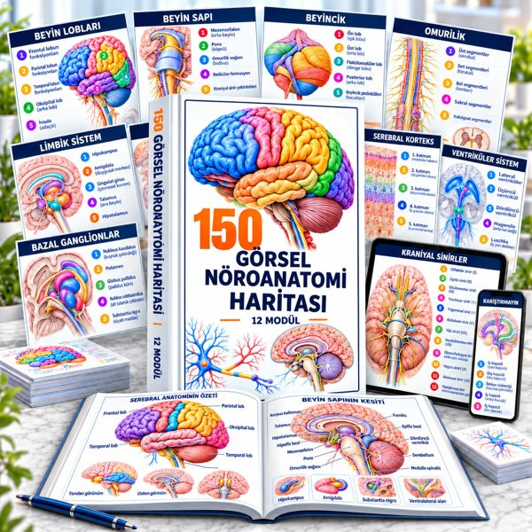
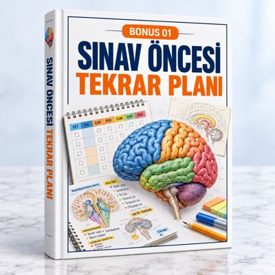
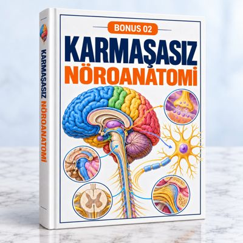
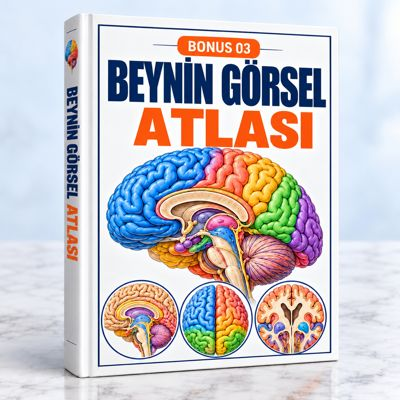

12 modülde 160 harita + 4 bonus rehber. Bu sayfayı kaydedin: ömür boyu erişim bağlantınızdır.
Telefonda daha hızlı açmak için modülleri tek tek indirebilirsiniz.

BONUS 01Sınav Öncesi Tekrar PlanıPDF · 2.8 MB · İndir ↓
BONUS 02Karmaşasız NöroanatomiPDF · 2.9 MB · İndir ↓
BONUS 03Beynin Görsel AtlasıPDF · 8.4 MB · İndir ↓BONUS 04Hızlı Ezberleme RehberiPDF · 2.6 MB · İndir ↓